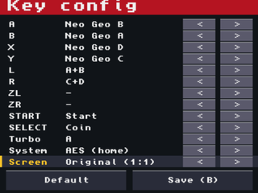

3DS 사용 안내
런처

- 고르기십자키 위/아래(L/R은 한 페이지씩)나 터치로 고르고, A나 두 번 터치로 실행합니다.
- 즐겨찾기SELECT를 누르거나 게임 왼쪽
*를 터치하면 넣고 뺍니다. 십자키 왼쪽/오른쪽이나 탭 터치로 All과 Fav를 바꿉니다. - 목록으로게임 중에 아래 화면 [Game list]를 두 번 누르면 돌아옵니다.
업데이트는 런처만. 엔진이 런처 안에 있어서, 이미 만든 .neo3ds 파일은 새 버전에서도 그대로 돕니다. 게임별 CIA는 엔진이 각자 들어 있어서 다시 변환해야 합니다. 키 설정과 백업 RAM은 유지되고, 다른 버전의 퀵세이브는 불러올 수 없습니다.
게임별 CIA를 쓰려면 .cia를 SD 카드에 넣고 FBI에서 설치합니다(SD → 파일 → Install CIA). 같은 게임은 CIA와 런처가 키 설정·백업 RAM·퀵세이브를 함께 씁니다.
조작
기본 배치입니다. 게임마다 키 설정에서 바꿀 수 있습니다.
게임 입력
| 3DS | 네오지오 |
|---|---|
| 십자키 | 조이스틱 |
| B / A / Y / X | A / B / C / D |
| SELECT / START | 코인 / 스타트 |
시스템·단축
| 3DS | 네오지오 |
|---|---|
| R + B / A / Y / X | 연사 켜기/끄기 |
| SELECT + L / SELECT + R | 퀵세이브 / 불러오기 |
| SELECT + START 1초 | 게임 재시작 |
아래 화면에 지금 배치가 실제 기판 버튼 색(A 빨강, B 노랑, C 초록, D 파랑)으로 나오고, 맨 위에 게임 이름과 FPS가 나옵니다.
아래 화면

Key config
키 설정 화면을 엽니다. 게임이 멈춥니다.
Turbo
누를 때마다 연사 끔 → A → B → X → Y.
System
가정용(AES)과 아케이드(MVS) 바이오스를 바꿉니다. 두 번 누르면 그 바이오스로 다시 시작.
Diagnostics
1초마다 FPS·코어별 시간·메모리 사용량. 터치하면 돌아감.
Restart
노란 막대가 찰 때까지 누르면 재시작. 전원을 껐다 켠 것과 같음(기판 세이브는 유지).
Service
MVS 바이오스 서비스 메뉴(난이도·크레딧·하드웨어 테스트). MVS 전용.
Slot / Save / Load
퀵세이브: 슬롯 1~3 고르기, 저장, 불러오기(두 번 누름).
Game list
런처로 실행했을 때만. 두 번 누르면 게임 목록으로.
⏻
아래 화면 백라이트를 끕니다. 아무 데나 터치하면 다시 켜짐(그 터치는 눌리지 않음).
키 설정

- A / B / X / Y / L / R / ZL / ZR / START / SELECT 각각에 네오지오 A~D, 동시 누르기(A+B, C+D, B+C, A+B+C, B+C+D, A+B+C+D), 스타트, 코인을 지정합니다. 예를 들어 KOF에서 L = A+B(회피), R = C+D(날리기).
- 줄 끝의
<>를 누르거나, 위/아래로 줄을 고르고 좌/우로 바꿉니다. 연사 버튼도 여기서 정합니다. - System은 바이오스를 바꿉니다(저장하면 다시 시작). MVS에서는 SELECT로 코인을 넣어야 시작합니다.
- Screen:
Original (1:1)은 304×224 그대로,Full (stretched)는 위 화면 400×240을 가득 채웁니다(가로 약 1.3배, 세로 약 1.07배라 일부 도트가 두 배 폭으로 보임). - B 또는
Save (B)로 저장하고 돌아갑니다.Default는 기본값으로 되돌립니다. 설정은 게임마다 저장됩니다.
연사
R을 누른 채 A/B/X/Y를 누르면 그 버튼이 연사 버튼이 됩니다(같은 버튼을 다시 누르면 꺼짐). 누르고 있으면 초당 20회, 톡톡 누르면 한 발씩 나갑니다. R + 버튼으로 바꾼 연사는 그 판에만 적용되고, 계속 쓰려면 키 설정에서 정합니다.
세이브
퀵세이브
게임마다 슬롯 3개에 지금 상태를 그대로 저장합니다. 다른 바이오스에서 저장한 슬롯은 그 바이오스로 바꾼 뒤 불러옵니다.
백업 RAM
MVS 바이오스에서 기판의 설정·하이스코어·랭킹 이니셜을 SD 카드에 저장합니다. 바뀌었을 때, 그리고 HOME·닫기·절전 때 바로 저장합니다.
저장 위치
| 파일 | SD 카드 경로 |
|---|---|
| 키 설정 | /3ds/neo3ds/keys/<타이틀 ID>.bin |
| 백업 RAM | /3ds/neo3ds/saves/<타이틀 ID>.sram |
| 퀵세이브 | /3ds/neo3ds/states/<타이틀 ID>.1 ~ .3 |
| 런처용 게임 파일 | /neo3ds/games/*.neo3ds |
| 런처 즐겨찾기 | /3ds/neo3ds/launcher.txt |
타이틀 ID는 롬셋 이름(zip 이름)으로 정해지므로, 같은 zip으로 다시 만들거나 런처로 실행해도 같은 파일을 씁니다.